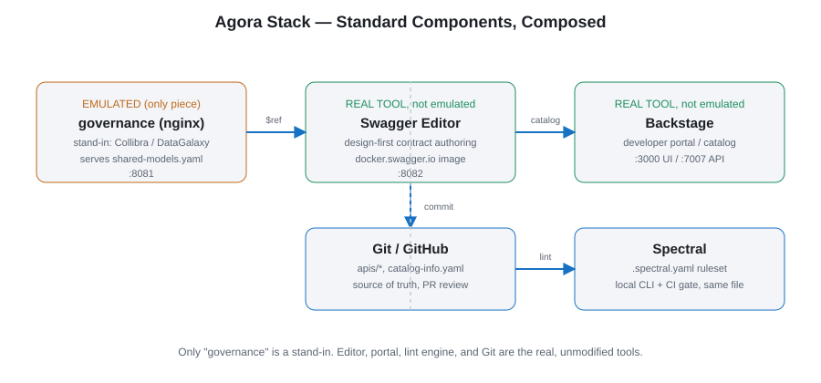

Agora
A local marketplace for governed API contracts: a Design-First API governance ecosystem in Docker, combining a governed shared-schema registry, a contract editor, and a developer portal that catalogs it all.
Mimics a Design-First API governance ecosystem with three containers:
| Component | Stand-in for | URL |
|---|---|---|
| Data Governance (nginx) | Collibra / DataGalaxy | http://localhost:8081 |
| API editor (Swagger Editor) | — (used directly) | http://localhost:8082 |
| Developer portal (Backstage) | — | http://localhost:3000 (frontend) |
| http://localhost:7007 (backend/API) |

Why some components are emulated and others aren't
The enterprise tools this stack is based on are commercial SaaS products, so most of them can't be pulled/run as Docker containers for local prototyping. Only one component in this stack is a true emulator/stand-in for a SaaS tool that can't be self-hosted:
Data Governance (nginx) emulates Collibra / DataGalaxy. These are
SaaS-only data governance catalogs, so the governance nginx container
is a stand-in that serves governed shared schemas and API contracts to
approximate what a real governance registry would provide.
The other two components are not emulations — they are the actual tools intended for real use, run as-is:
- Swagger Editor is the real open-source contract-design tool this stack uses in practice (not a stand-in for Stoplight/SwaggerHub — those are SaaS alternatives not being targeted here).
- Backstage is the real developer portal this stack uses, run as-is.
Key endpoints
- Shared governed data models:
http://localhost:8081/shared-models.yaml - Draft API contract:
http://localhost:8081/apis/sample-orders-api/openapi.yaml - Swagger Editor:
http://localhost:8082 - Backstage catalog UI:
http://localhost:3000 - Backstage catalog API:
http://localhost:7007/api/catalog/entities
Usage
docker compose up -d # or: make up
docker compose down # or: make downOn networks with a corporate HTTP proxy, verify with
curl --noproxy '*' http://localhost:<port> since proxy-aware tools
(including PowerShell's Invoke-WebRequest) may otherwise try to route
localhost through the proxy and time out.
Known pitfalls
swaggerapi/swagger-editorcan be blocked on some corporate Docker Hub mirrors — this stack pullsdocker.swagger.io/swaggerapi/swagger-editorinstead.- Swagger Editor listens on port 80 inside its container, mapped here as
8082:80. - The
@backstage/create-appCLI prompts interactively for an app name; the Dockerfile pipes the name through stdin to keep the build non-interactive.